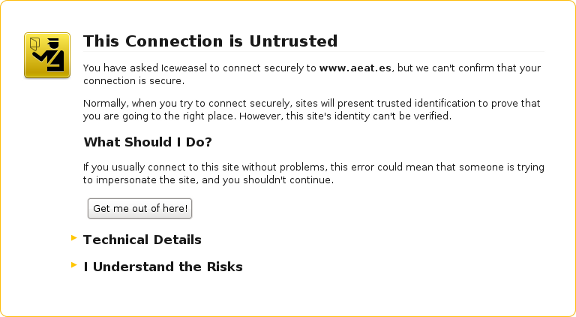

Virtualization Platform SecurityDocumentationShellPrevious page: Virtualization Platform SecurityIndex page: DocumentationNext page: ShellKicksecure Limitations

Kicksecure developers have done their utmost to provide solid tools which protect online security, but no perfect solution exists to the complex security problem. Before deciding whether Kicksecure is the right platform to use, it is crucial that each individual understands the limitations of the tools offered and how to make best use of them.
Introduction
 This chapter focuses on security threats that Kicksecure either cannot,
or does not, mitigate at present.
This chapter focuses on security threats that Kicksecure either cannot,
or does not, mitigate at present.
Kicksecure comes with many security features. Kicksecure is Security Hardened by default and also provides extensive Documentation including a System Hardening Checklist. The more you know, the safer you can be.
External Devices Risks
Attack Vectors by External Devices
- Keystroke Inference Attack: Avoid typing on any computer or mobile device in places where open microphones are used, otherwise recorded keyboard sounds might provide enough information to accurately reconstruct what was typed. [1]
- The minute vibrations of tapping touchscreens are detectable by virtual assistant microphones in a range of 0.5 meters even in the midst of noisy environments. Note that haptic feedback wasn't enabled. [2] [3]
- It is also possible to reconstruct text reflections in eyeglasses from 720p cams. [4]
- When having sensitive conversations, even over encrypted channels, consider that AI is capable of reading lips when captured on video footage. [5]
- Even if your hands are concealed while typing, it is possible for AI to infer with high accuracy, what words are being typed by analyzing shoulder movements. [6]
- Heat traces from a recently typed password could be captured by thermal cameras in the vicinity of your hardware. [7]
- Although a remote threat, thermal imaging can capture body heat remains from keys touched to input passwords up to one minute after the fact. [8]
- Also avoid places with CCTV or those which risk shoulder surfing.
- Ultrasonic Beacons: Your computer or mobile device could also emit an ultrasonic beacon which is then received by another device in the vicinity. [9] Ultrasound could be used to locate users and/or to exfiltrate information, because data can be encoded as sound.
Mobile Phones and Tablets
Mobile phones come equipped with cameras, speakers, and microphones.
These built-in features can potentially be exploited to eavesdrop on
your conversations and typing. Removing the microphone is an
insufficient countermeasure, since technically
Speaker = Microphone. For more information, see Eavesdropping Risk by Speakers.
Additionally, it's possible for adversaries to deduce what you're typing, including sensitive information like passwords. This is known as a Keystroke Inference Attack.
A large number of users operate phones running on non-freedom software. For further details, consult Avoid Non-Freedom Software.
Most mobile phones essentially act as spies due to the fact that users don't have control over the software running on these devices. They offer very little in the way of software freedom. As such, it's advisable to treat them with caution. Given the potential risks and the fact that users cannot be fully aware of what the software on their phones is capable of, the devices are inherently insecure by default. For more on this, see Mobile Phone Security.
The most effective precaution one can take is to treat mobile phones as potential security risks and to relocate them to another room where its camera, speakers and microphones cannot spy on what is typed on the keyboard.
To mitigate risks, it is crucial to keep mobile phones at a distance from secured computers. This precaution prevents the phone from capturing audible or ultrasound frequencies that could compromise security.
The most effective precaution one can take is to treat mobile phones as potential security risks. It is crucial to keep these devices at a distance from secured computers. This means relocating them to another room where their built-in cameras, speakers, and microphones are unable to spy on keyboard input. This step is essential to prevent mobile phones from capturing either audible or ultrasound frequencies, which could potentially compromise security.
Smart TVs
Have speakers built-in. Speakers = Microphone. Speakers can be repurposed as microphones which can be abused to listen to your keystrokes to know everything you are typing. Also often have microphones built-in.
See also the chapter above.
Smart Home
Also other smart home devices such as Amazon Alexa have the same risks as the above two chapters as these come with speakers and microphones.
User Mistakes
Protection Against Social Engineering
Kicksecure does not protect against social engineering attacks. These attacks rely on human cognitive biases and trick people into revealing passwords or other sensitive information that allows the compromise of a target system's security. [10]
Other examples of social engineering include convincing someone to send a copy of logs or other information from the Kicksecure. In all cases, after trust has been established between the attacker and the victim, and sufficient information has been gathered, an exploit will be executed to perform harmful actions such as stealing personal or financial information, sabotaging the target's system, and so on. [10]
The best tools in maintaining security are the knowledge that comes from research and experience, and healthy skepticism towards scenarios that pose potential security threats.
Dedicated wiki page: Social Engineering.
Protection Against External Threats or User Mistakes
Obviously, Kicksecure cannot protect against external threats like people looking over the user's shoulder or gaining physical access to the machine in order to subvert the security features.
Kicksecure cant prevent people from shooting themselves in the foot, leading to inadvertent insecurity.
Attacks
Man-in-the-middle Attacks
A man-in-the-middle attack (MitM) is a where an attacker makes independent connections with two parties and secretly relays (and potentially alters) messages between them. This is a form of active eavesdropping, since the two parties think they are communicating directly with each other and are unaware the conversation is being controlled by the attacker. [11]
Figure: Illustration of a MitM Attack
Even when using Tor, MitM attacks can still happen between the exit relay and the destination server. The exit relay itself can also act as a man-in-the-middle. For an example of such an attack see MW-Blog: TOR exit-node doing MITM attacks. It is worth reiterating that protecting against these attacks requires end-to-end encryption and taking extra steps to verify the server's authenticity.
Normally a server's authenticity is automatically verified by the browser using SSL/TLS certificates which are checked against a set of recognized certificate authorities (CAs). If a security exception message appears like the figure below, then this might constitute a MitM attack. The warning should not be bypassed unless there is another trusted way of checking the certificate's fingerprint with the people running the service.
Figure: An Untrusted Connection

Mozilla has an educational resource to help determine if a connection to a website is secure. The Electronic Frontier Foundation (EFF) also has an excellent interactive illustration that provides an overview of HTTP / HTTPS [12] connections with and without Tor, and what information is visible to various third parties.
The Fallible Certificate Authority Model
Unfortunately, the vast majority of Internet encryption relies on the CA model of trust which is susceptible to various methods of compromise. Ultimately, encryption in and of itself does not solve the authentication problem in electronic communications, as seen in the actions of advanced adversaries who have targeted and undermined this central pillar upon which the Internet relies.
For example, Verisign was hacked successfully and repeatedly in 2010, with the likely conclusion being the attackers were able to forge certificates for an unknown number of websites.
A more glaring example was the confirmation by Comodo on March 15, 2011, that a user account with an affiliate registration authority had been compromised. This is a privacy and security disaster since Comodo is a major SSL/TLS company and the breach led to the creation of a new user account that issued nine certificate signing requests for seven domains: mail.google.com, login.live.com, www.google.com, login.yahoo.com (three certificates), login.skype.com, addons.mozilla.org, and global trustee. [13]
Later in 2011, DigiNotar, a Dutch SSL certificate company, incorrectly issued certificates to a malicious party or parties. It later emerged that DigiNotar was apparently compromised months before, or perhaps even in May of 2009, if not earlier. Rogue certificates were issued for multiple domains, including: google.com, mozilla.org, torproject.org, login.yahoo.com and many more. [14]
Considering the frequency of attacks and the passage of time, there is a distinct possibility that a MitM attack might occur even when the browser is trusting a HTTPS connection. [15]
SSL/TLS Alternatives
Depending on your personal circumstances, there are alternatives to SSL/TLS which can be considered. Unfortunately, none of them can be used as a drop-in replacement for SSL/TLS. Tools providing connection security include: Monkeysphere, Convergence, Perspectives Project.
Using Tor does not magically solve the authentication problem. Tor's distinct advantage is that by providing anonymity, it is more difficult for attackers to perform a MitM attack with a rogue SSL/TLS certificate that is targeted at just one specific individual. However, the disadvantage of Tor is that it is easier for people or organizations running malicious Tor exit relays to perform a large scale MitM attempt. Further, malicious exit nodes could perform attacks targeted at a specific server, and especially those Tor clients who happen to utilize the service.
In all cases, it is advised to use additional message encryption for email, chats and so on. It is unwise to rely on SSL/TLS alone. Relevant tools that may be useful include:
- Encrypted messengers.
- GPG.
- GPA.
- Mozilla Thunderbird for encrypted email client.
Disk Encryption
If any files such as documents, images, photos, or videos are saved inside Kicksecure, they will not be encrypted by default. To the best of the author's knowledge, no Linux desktop operating system encrypts these by default. This is why it is recommended to apply full disk encryption on the host operating system to protect sensitive data.
Subject: and other Header Fields of Encrypted Emails
 Unless precautions are taken, the "Subject:" line and other header
fields are not encrypted when using OpenPGP encrypted email.
Unless precautions are taken, the "Subject:" line and other header
fields are not encrypted when using OpenPGP encrypted email.
This weakness is not related to Kicksecure or the OpenPGP protocol; it is for backwards compatibility with the original SMTP protocol. Unfortunately, no RFC standard exists yet for Subject line encryption.
TODO: investigate if this situation has improved since Thunderbird native OpenPGP support.
Those who require OpenPGP encryption with a suitable email client are recommended to use Thunderbird (Mozilla's email client), which includes a graphical front-end for using the GnuPG ("GPG") encryption program.
Platform Security
Password Strength
If weak passwords (passphrases) are used they can be easily determined by brute-force attacks, whether or not Kicksecure is installed. In essence, attackers systematically try all passwords until the correct one is found, or attempt to guess the key which is created from the password using a key derivation function (an exhaustive key search). This method is very fast for short and/or non-random passwords.
For greater security it is recommended to generate strong and unique Diceware passwords and follow other recommendations concerning safe habits, password generation and storage.
Compromised Hardware or Advanced Malware
Virtualizers like Qubes, VirtualBox and KVM cannot absolutely prevent the compromise of hardware, nor detect advanced malware. Running all activities inside VMs is a very reasonable approach. However, this only raises the bar and makes it more difficult and/or expensive to compromise the whole system. It is by no means a perfect solution. As one Google Project Zero researcher noted recently when demonstrating a VM escape in KVM: [17]
The bug and its exploit still serve as a demonstration that highly exploitable security vulnerabilities can still exist in the very core of a virtualization engine, which is almost certainly a small and well audited codebase. While the attack surface of a hypervisor such as KVM is relatively small from a pure LoC perspective, its low level nature, close interaction with hardware and pure complexity makes it very hard to avoid security-critical bugs.
While we have not seen any in-the-wild exploits targeting hypervisors outside of competitions like Pwn2Own, these capabilities are clearly achievable for a well-financed adversary. I've spent around two months on this research, working as an individual with only remote access to an AMD system. Looking at the potential ROI on an exploit like this, it seems safe to assume that more people are working on similar issues right now and that vulnerabilities in KVM, Hyper-V, Xen or VMware will be exploited in-the-wild sooner or later.
Kicksecure cannot provide protection if the system's trusted computing base has been compromised by:
- Physical access and the installation of untrusted pieces of hardware (like a keylogger);
- Firmware Trojans (including BIOS/UEFI attacks); or
- Malware.
If the Kicksecure is affected by malware, firmware trojans or malicious hardware components, then your system will be compromised.
In the event a system compromise is strongly suspected or confirmed, the ultimate goal is to re-establish a trusted, private environment for future activities -- see Compromise Recovery for techniques to recover from host and/or Kicksecure in a VM infections.
Host Security
The security of the Kicksecure platform is itself reliant upon the security of the host computer. (If Kicksecure used within VM)
Some users might run Kicksecure on top of the every day operating system inside a virtual machine without making any additional host operating system security improvements. In that case, safety is materially improved by using a dedicated host operating system solely for Kicksecure VM. For better security, this system should be configured on a computer bought solely for Kicksecure activities, and which has never been used before.
There are a number of recommendations relevant to host OS security in the following Documentation sections:
- System Configuration and Access
- Basic Security Guide.
- Advanced Security Guide.
- Computer Security Education.
The System Hardening Checklist also provides a quick and handy reference guide for specific areas of interest.
Software
Avoid Non-Freedom Software
 For system security it is strongly advised to not install proprietary,
non-freedom
software. Instead, use of Free Software
is recommended.
For system security it is strongly advised to not install proprietary,
non-freedom
software. Instead, use of Free Software
is recommended.
Possible risks associated with using non-freedom software:
- Potential advanced backdoors or malware in the software itself.
- Privacy breaches. Possibly key logger?
- Software that depends on third party servers could access identifying information for payments or logins linked to real identity.
For more information on installing third-party free software, consult the Foreign Sources page for advice. See also: Is It Ever a Good Thing to Use a Nonfree Program?
Open Source software like Qubes, Debian and Kicksecure is more secure than proprietary/closed source software. The public scrutiny of security by design has proven to be superior to security through obscurity. This aligns the software development process with Kerckhoffs' principle - the basis of modern cipher-systems design. This principle asserts that systems must be secure, even if the adversary knows everything about how they work. Generally speaking, Freedom Software projects are much more open and respectful of the privacy rights of users. Freedom Software projects also encourage security bug reports, open discussion, public fixes and review.
As Free Software pioneer Richard Stallman puts it:
- "... If you run a nonfree program on your computer, it denies your freedom; the main one harmed is you. ..."
- "Every nonfree program has a lord, a master -- and if you use the program, he is your master."
- "To have the choice between proprietary software packages, is being able to choose your master. Freedom means not having a master. And in the area of computing, freedom means not using proprietary software."
Or as the GNU project puts it:
Nonfree (proprietary) software is very often malware (designed to mistreat the user). Nonfree software is controlled by its developers, which puts them in a position of power over the users; that is the basic injustice. The developers and manufacturers often exercise that power to the detriment of the users they ought to serve.
This typically takes the form of malicious functionalities.
Some malicious functionalities are mediated by back doors.
Back door: any feature of a program that enables someone who is not supposed to be in control of the computer where it is installed to send it commands. (added by editor "Most times without consent or awareness.")
The GNU project created a list with examples of Proprietary Back Doors. The Electronic Frontier Foundation (EFF) has other examples of the use of back doors.
Related: Why Kicksecure is Freedom Software
Always Verify Signatures
For greater system security, it is strongly recommended to avoid installing unsigned software. Always make sure that signing keys and signatures are correct and/or use mechanisms that heavily simplify and automate this process, like apt upgrades.
As a reminder, digital signatures are not a magic bullet. While they increase the certainty that no backdoor was introduced by a third party during transit, this does not mean the software is absolutely "backdoor-free". Learn more about this process and what digital signatures prove.
Kicksecure Persistence vs Live vs Amnesic
Traces of software installations, files or other user activities depend on whether or not the user is using a live operating system or Live Mode.
A Live Operating System or Live Mode is not Configured
If any software is downloaded or used on a computer, local traces of the download, installation and use will be left on the device's mass storage device (hard drive, HDD, SSD). This normal mode of operation is referred to as "persistent mode" since any files downloaded, documents created and so on will persist after reboot.
Any created files still exist after the computer is powered-off or rebooted, unless steps are taken to securely wipe the files or otherwise remove all signs of their existence. Unless Live Mode is used, there are no preventative measures to limit what is written to disk. This can lead to evidence of activity in created files, backup files, temporary files, swap, chat history, browser history and so on.
Be aware that although Live Mode inside Kicksecure virtual machine (VM) make writes go to RAM instead of the HDD/SSD, traces of activity may be left in swap files, core dumps or via other configurations on the host. If this is a risk in your circumstances, refer to Anti-Forensics Precautions or preferably utilize Live Mode. [18] [19]
It is likely most Kicksecure users are utilizing persistent mode. For this reason it is recommended to Full_Disk_Encryption. A higher level of security is afforded by encrypting everything, including data, system and swap partitions.
A Live Operating System or Live Mode is Configured
Refer to the Live Mode chapter for further details.
Live DVD / USB
To install Kicksecure on a USB, see: Kicksecure on USB.
Kicksecure Development
Missing Kicksecure Features
Kicksecure is missing some features, including those relating to security. While many issues listed below are planned for future implementation, a number will probably never get "fixed" because they are impossible to address in a software-only project.
Category |
Missing Feature or Capability |
|---|---|
Adversaries |
Protect against global network adversaries. |
AppArmor |
Apply AppArmor profiles for every process or application. [20] |
Backdoors |
Protect against hardware or software backdoors. |
Encryption |
Encrypt a user's data, documents, files and so on. |
Hardening |
Use all the possible hardening options like full PIE and grsecurity. |
Local Adversaries |
Protect against local adversaries who could mount cold boot and evil maid attacks, or otherwise compromise a user's physical machine. |
MAC Address |
Automatically protect against MAC address fingerprinting on public networks. |
Passwords |
Make weak passwords stronger. |
RAM |
|
Security Updates |
Automatically apply security updates. This was a conscious developer decision because automated updates also come with their own set of security problems. |
Software Attacks |
Protect against highly skilled software attacks, unless Kicksecure for Qubes is utilized. |
Stylometry |
Obfuscate an individual's linguistic style to defeat stylometric analysis. |
User Behavior |
Protect those who: fail to read the Documentation, engage in unsafe behaviors, or change default settings without knowing the implications. |
Kicksecure Builds |
|
This list is likely incomplete. It is strongly encouraged to read the rest of the Documentation and perhaps the Design chapter to have a full overview of Kicksecure security, including the list of supported and unsupported features.
Contributors who want to help improve Kicksecure security should join the discussions on Forums.
Kicksecure is a Work in Progress
Kicksecure, as well as all the software it includes, are under continuous development and might contain programming errors or security holes -- Stay Tuned to Kicksecure development, and do not rely on the platform for strong security.
That said, Kicksecure has been developed with great care, but it is impossible to ever prove that it is absolutely free of mistakes that degrade the goals of the extended project description.
Basic functionality is built-in and Kicksecure can be used to browse the web, use email, IRC, SSH, and a host of other activities. Development is ongoing and more features are continually being added. Contributors who want to join the development process are most welcome; see Patches.
See also: Security Reviews and Feedback and Security Overview.
Unsubstantiated Conclusions
Users must be careful not to draw incorrect conclusions based on the existence of specific Kicksecure communication channels, community software utilized, applications installed on the platform, or the availability of certain wiki entries. Kicksecure tries to use concise language so that users are not misled into believing anything has been implied. Despite this effort, users will sometimes draw false conclusions in an unintended way. Consider the following hypothetical discussion.
Developer: Donations to Kicksecure are possible via Bitcoin.
Kicksecure user: Since you are knowledgeable about Bitcoin, can you also accept Monero donations?
In this case the hypothetical developer did not state "I am knowledgeable about Bitcoin", but rather concisely stated "Donations to Kicksecure are possible via Bitcoin." The conclusion drawn by the user "Since you are knowledgeable about Bitcoin" might be totally unsubstantiated.
In a similar fashion, just because Kicksecure does something -- like providing a telegram channel -- it does not follow that Kicksecure endorses it; see also Terms of Service: Non-endorsement. A list of further examples is outlined below.
Fact [21] |
False Conclusion [22] |
More Information |
|---|---|---|
Kicksecure provides a Bitcoin (BTC) donation address. |
Bitcoin is anonymous. |
|
Kicksecure provides a Monero (XMR) donation address. |
Monero is perfect. |
|
The Kicksecure website is using popular web applications (web apps) like MediaWiki, GNU Mailman and Discourse (forum software). |
These are perfectly "secure" (for whatever purpose, threat model) web apps. |
In an ideal world, better web apps would be used but this is not possible due to finite Kicksecure resources. To learn more, see: Privacy on the Kicksecure Website. |
Kicksecure provides downloadable VirtualBox builds. |
VirtualBox is secure. |
[Broken-ExtLink--no-url-was-provided] but there are [Broken-ExtLink--no-url-was-provided]. |
Kicksecure inside VMs is available for Windows hosts. |
Windows is a suitable host. |
Windows Hosts pose numerous security and privacy threats. |
Kicksecure inside VMs is installable on macOS hosts. |
macOS is a suitable host. |
macOS Hosts pose numerous security and privacy threats. |
Kicksecure is Freedom Software. |
Kicksecure is a Freedom Software 'maximalist' project. |
See also: |
Kicksecure provides a telegram channel support channel. |
Telegram is a perfect, privacy-respecting, secure messenger. |
See footnote. [23] |
There is an official Kicksecure twitter profile. |
Twitter is a safe platform to utilize. |
|
Kicksecure has a public forum. |
The Kicksecure forum and associated comments are intended to promote free speech. |
Unfortunately, running a free speech platform is a full-time job and would constitute a separate project in itself. This is simply not possible as a side project. |
Kicksecure is Open Source. |
Kicksecure must/should implement all ideas from the community. |
|
See also: Unsubstantiated Conclusions |
It is also recommended to consult the following resources:
- list of forum posts regarding the Kicksecure project philosophy;
- Linux User Experience versus Commercial Operating Systems
On top of unsubstantiated conclusions it also happens that adherence to "perfectly moral" behavior or an approved ™ set of political/ideological beliefs is expected from the Kicksecure project. However, what counts as "perfectly moral" and the path of attaining therein will always be subjective and disputed among proponents. Such demands include "don't allow running Kicksecure on Windows hosts", "don't have a twitter project account", "don't accept Bitcoin donation", "don't use centralized services such as telegram", "don't document X, because of Y". Those disagreeing with our methods and philosophy are welcome to exercise their right to fork the project under the respective licenses.
Attribution
Note: Kicksecure
is an Implementation of the Securing Debian Manual.
Specifically the feature you're reading about here is inspired by this
chapter in the manual: Secure
file
transfers
Footnotes
- This is a variation of an older attack perfected during the Cold War where recorded typewriter sounds allowed discovery of what was typed. See: https://freedom-to-tinker.com/2005/09/09/acoustic-snooping-typed-information/ and https://www.schneier.com/blog/archives/2016/10/eavesdropping_o_6.html
- https://arxiv.org/pdf/2012.00687.pdf
- https://arxiv.org/pdf/1903.11137.pdf
- https://www.schneier.com/blog/archives/2022/09/leaking-screen-information-on-zoom-calls-through-reflections-in-eyeglasses.html
- https://arxiv.org/pdf/1611.01599.pdf
- https://www.schneier.com/blog/archives/2020/11/determining-what-video-conference-participants-are-typing-from-watching-shoulder-movements.html
- [ThermoSecure: Investigating the effectiveness of AI-driven thermal attacks on commonly used computer keyboards], https://www.schneier.com/blog/archives/2022/10/recovering-passwords-by-measuring-residual-heat.html
- https://www.schneier.com/blog/archives/2018/07/recovering_keyb.html
- * paper: On the Privacy and Security of the Ultrasound Ecosystem * figure: Operational steps of the deanonymization attack against a user of an anonymization network.
- https://sansorg.egnyte.com/dl/Y7NTZsCxKN
- https://en.wikipedia.org/wiki/Man-in-the-middle_attack
- HTTPS here refers to encrypted connections, whether it is (inferior) SSL or TLS.
- Source: Comodo: The Recent RA Compromise
- Source: The Tor Project: The DigiNotar Debacle, and what you should do about it
- This is one reason why self-authenticating onion services (.onion) connections are superior to HTTPS, because they do not rely on the flawed CA system for confirmation of the destination server.
- Quoted from wikipedia Man-in-the-middle_attack and Tor Project: Detecting Certificate Authority compromises and web browser collusion.
- https://googleprojectzero.blogspot.com/2021/06/an-epyc-escape-case-study-of-kvm.html
- Unix-like operating systems also swap (move) memory pages between host RAM and the host disk, and this behavior cannot be prevented in Kicksecure in a VM. The danger is data leakage might occur and an unencrypted swap partition could reveal interesting data to an attacker or be used to store unencrypted copies of files in /tmp for later retrieval.
- https://www.linuxtopia.org/online_books/linux_administrators_security_guide/06_Linux_File_System_and_File_Security.html
- Although a full system MAC policy is currently in development, see here for further details.
- Things that were really stated.
- Things which were not said or implied.
- Some criticisms of Telegram. * New releases are squished into a single commit, see: one commit. * It is impossible to sign up without a phone number. * There are other concerns, but they are irrelevant for illustrating the point being made here.
License
Kicksecure Warning wiki page Copyright (C) Amnesia
Kicksecure Warning wiki page Copyright (C) 2012 - 2026 ENCRYPTED SUPPORT LLC <adrelanos(at)kicksecure.com(Replace(at)with@.)Please DO NOT use e-mail for one of the following reasons:Private Contact: Please avoid e-mail whenever possible. (Private Communications Policy)User Support Questions: No. (See Support.)Leaks Submissions: No. (No Leaks Policy)Sponsored posts: No.Paid links: No.SEO reviews: No.Advertisement deals: No.Default application installation: No. (Default Application Policy)>This program comes with ABSOLUTELY NO WARRANTY; for details see the wiki source code.
This is free software, and you are welcome to redistribute it under certain conditions; see the wiki source code for details.